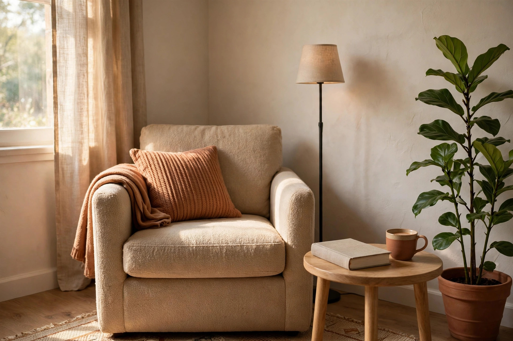

Small Living Room
Small Living Room Corner Ideas: 12 Ways to Use Dead Space
Intro
Every small living room has dead corners — the space behind the door, the corner by the window, the gap beside the sofa. They collect dust and nothing else. But a corner is not wasted space. It is a small room inside the room, and it can do a real job.
These 12 corner ideas turn dead space into the most useful square metre in the room. Most of them cost under $25, and several cost nothing at all.

1. A reading chair and a lamp — $20–$40
One armchair, one floor lamp, one small side table — that is a reading corner. Put it in the corner by the window for daylight, and the chair becomes the most-used seat in the room. A second-hand chair costs $20–$30; a lamp $10–$15.
2. A tall plant in the empty corner — $8–$20
A tall plant — a snake plant, a fiddle-leaf or a palm — fills a corner with life and height, and it needs no furniture at all. It also cleans the air and softens the hard corner of the room. A medium plant costs $8–$20.
3. Corner shelves for books and plants — $12–$25
Two or three small corner shelves hold books, plants and photos, and they use wall space instead of floor space. Floating corner shelves cost $12–$25 for a set of three. In a rented flat, use shelves with adhesive strips.
4. A small desk in the corner — $25–$50
A corner desk of 80 by 80 cm fits a laptop and a lamp, and it turns a dead corner into a workspace. A simple wall-mounted desk costs $25–$50, or use a shelf board on brackets at desk height.
5. A floor cushion pile for guests — $10–$20
Stack two or three floor cushions in a corner and they become extra seating for guests, a reading nest for children, and a decoration when they are not in use. Cushions cost $10–$20 each, and they take up no space at all when stacked.
6. A basket for blankets — $8–$15
A large basket in the corner holds throws, cushions and magazines, and it hides clutter that would otherwise spread across the sofa. A woven basket costs $8–$15 and looks like decoration even when it is full.
7. A leaning ladder shelf — $20–$35
A leaning ladder shelf stands in a corner without any drilling — it just leans against the wall. Books on the lower rungs, plants on the upper ones. It costs $20–$35 and moves easily when you rearrange the room.
8. A cat corner, if you have a cat — $10–$20
A small cat bed, a scratching post and a toy in one corner keeps the cat happy and keeps cat things out of the rest of the room. A simple cat bed costs $10–$20, and the cat will choose the corner anyway — give it the corner on purpose.
9. A bar cart in the corner — $25–$40
A small bar cart or a tea trolley in a corner holds glasses, a teapot and a few bottles, and it wheels out when guests come. A second-hand trolley costs $25–$40, and it turns a dead corner into the most social spot in the room.
10. A mirror in the corner — $10–$15
A tall mirror leaned in a corner bounces light across the room and makes the corner disappear. It also gives you a full-length mirror without taking wall space. A leaning mirror costs $10–$15 second-hand.
11. A toy corner with one box — $5–$10
If children use the room, give toys one corner and one box. When the box is full, a toy goes out before a new one comes in. One box costs $5–$10, and the rule is what keeps the rest of the room clear.
12. Leave one corner empty — $0
Not every corner needs a job. One empty corner gives the room breathing space and makes the furnished corners look deliberate. Empty space is free, and in a small room it is a design choice, not a failure.
Conclusion — Give every corner one job
If you only do three things, do these: put a chair and a lamp in the best corner, a tall plant in the darkest corner, and a basket in the corner that collects clutter. Those three corners do the most work.
Then leave one corner empty, and stop. A small room works when every corner has a job — and when one corner is allowed to rest.
Budget recap: Chair + lamp: $20–$40; Tall plant: $8–$20; Corner shelves: $12–$25; Basket: $8–$15. Total to use every corner: about $30–$60, and the chair, plant and basket alone change the room for under $50.
Pinterest pin titles (3 fresh pins, same article, different designs)
- "Small Living Room Corner Ideas — 12 Ways to Use Dead Space"
- "Dead Corners? 12 Ideas That Actually Use Them"
- "12 Small Living Room Corner Ideas Under $40"